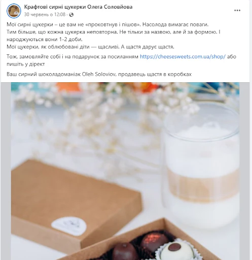
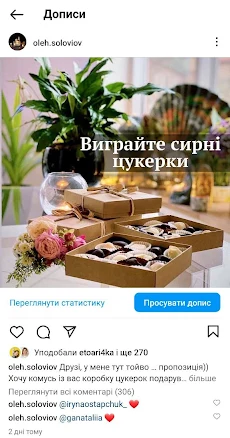
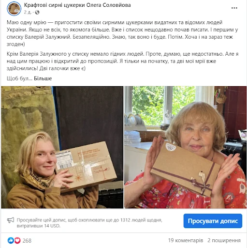
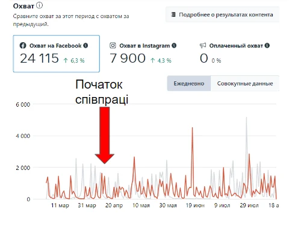
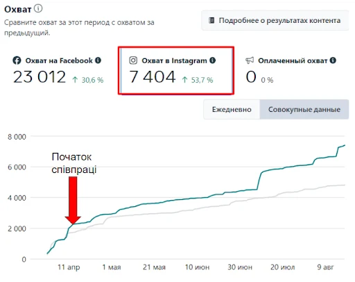

Кейс: як ми розкачали існуючу аудиторію сирних цукерок у соцмережах без реклами
/клієнт:
/мета:
Перетворити існуючих підписників у Facebook та Instagram на лояльних покупців — без бюджету на рекламу.
/Завдання:
- Активізувати «сплячу» аудиторію, яка давно підписана, але не купує
- Побудувати довіру до продукту
- Визначити та погасити заперечення потенційних покупців
- Створити емоційний зв’язок із брендом
- Запустити контентну воронку, що підштовхує до покупки
/Контентна воронка, яку ми використали:
I етап — Привернення уваги
- Хто ми, що за продукт
- Асортимент цукерок
- Авторська рецептура
Цей етап охоплював ≈10% контенту — бо нових підписників майже не було, ставка була на тих, хто вже в аудиторії

II етап — Зацікавлення
- Думки харизматичного шоколатьє
- Місія бренду (цінності, з якими хочеться себе асоціювати)
- Тематичні пости з креативними аналогіями на основі кількості цукерок у наборі
Аудиторія починала бачити в бренді більше, ніж просто солодощі
III етап — Симпатія та залучення
- Опитування в Stories («Улюблені смаки», «Коли їсте шоколад»)
- Рубрика «Як правильно їсти шоколад»
- Секрети про цукерки (підписи на тарталетках тощо)
- Конкурси
Контент почав викликати емоційний відгук і впізнавання себе

IV етап — Довіра та бажання купити
- «Кухня виробництва»: відео з процесу створення
- Розвінчання заперечень (наприклад, «чому не купують у спеку»)
- Відгуки клієнтів, у т.ч. відомих людей
Аудиторія почала бачити бренд як прозорий і якісний

V етап — Продажі
- Як замовити, як оплатити
- Естетика, поєднання смаків
- Акценти: для гурманів, для подарунків
Кожен пост мав конкретне УТП для окремої мотивації
VI етап — Повторні продажі та лояльність
- Гумористичні пости про «залежність від сирних цукерок»
- Відгуки клієнтів, які поверталися знову
- Створення спільноти через репости, відмітки, коментарі
Підписники почали ідентифікувати себе як частину сирно-шоколадного ком’юніті
/Результати за 4 місяці:
- Залучення зросло з 403 до 696
- Взаємодія з контентом — з 832 до 2076
- Взаємодія з Reels — з 193 до 1201
- Reels публікувались регулярно (з 5 до 11 на місяць)
- Взаємодія з контентом — з 729 до 1157, окремі піки — 1524 і 1249
- Збільшення органічного охоплення без реклами
- Регулярні піки охоплень завдяки «контенту, що залітає»


/Висновки:
Контентна воронка в дії — навіть без реклами вона змогла:
- активізувати наявну аудиторію
- побудувати довіру й цікавість
- стимулювати продажі
- створити ком’юніті навколо бренду
Системність та емоційність контенту стали основою результату. Без «зливання» бюджету — тільки розумна стратегія.
Деталі — на cases.media